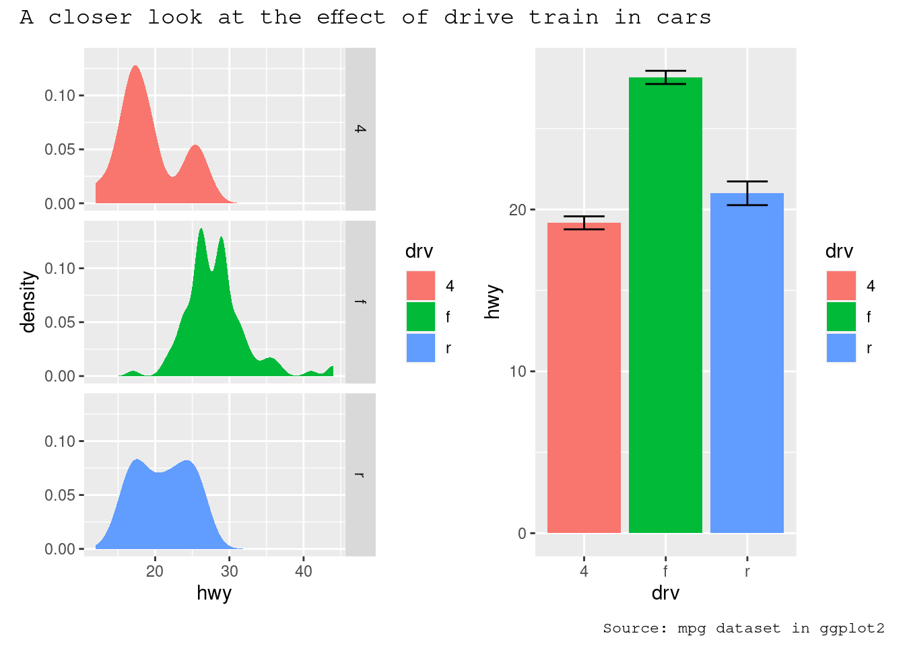

Arranging plots
library(tidyverse)## ── Attaching packages ─────────────────────────────────────── tidyverse 1.3.1 ──## ✓ ggplot2 3.3.3 ✓ purrr 0.3.4
## ✓ tibble 3.1.1 ✓ dplyr 1.0.6
## ✓ tidyr 1.1.3 ✓ stringr 1.4.0
## ✓ readr 1.4.0 ✓ forcats 0.5.1## ── Conflicts ────────────────────────────────────────── tidyverse_conflicts() ──
## x dplyr::filter() masks stats::filter()
## x dplyr::lag() masks stats::lag()The grammar presented in ggplot2 is concerned with creating single plots. While the faceting system provides the means to produce several subplots all of these are part of the same main visualization, sharing layers, data, and scales. However, it is often necessary to use multiple disparate plots to tell a story or make an argument. These can of course be created individually and assembled in a layout program, but it is beneficial to do this in code to avoid time consuming and non-reproducible manual labor. A range of packages have risen to the occasion and provide different approaches to arranging separate plots. While this chapter will focus on the patchwork package you may also find some of the same functionalities in the cowplot, gridExtra and ggpubr packages.
This chapter will be split into two parts. The first will be concerned with arranging plots side by side with no overlap, while the second will be concerned with arranging plots on top of each other. While these two scenarios are not necessarily in opposition to each other, the former scenario will often benefit from functionality that makes little sense in the latter, e.g. alignment of plotting regions.
Laying out plots side by side
Often, one wants to show two or more plots side by side to show different aspects of the same story in a compelling way. This is the scenario that patchwork was build to solve. At it’s heart, patchwork is a package that extends ggplot2’s use of the + operator to work between multiple plots, as well as add additional operators for specialized compositions and working with compositions of plots.
As an example of the most basic use of patchwork, we’ll use the following 4 plots of the mpg dataset
p1 <- ggplot(mpg) +
geom_point(aes(x = displ, y = hwy))
p2 <- ggplot(mpg) +
geom_bar(aes(x = as.character(year), fill = drv), position = "dodge") +
labs(x = "year")
p3 <- ggplot(mpg) +
geom_density(aes(x = hwy, fill = drv), colour = NA) +
facet_grid(rows = vars(drv))
p4 <- ggplot(mpg) +
stat_summary(aes(x = drv, y = hwy, fill = drv), geom = "col", fun.data = mean_se) +
stat_summary(aes(x = drv, y = hwy), geom = "errorbar", fun.data = mean_se, width = 0.5)The most simple use of patchwork is to use + to add plots together thus creating an assemble of plots to display together:
library(patchwork)
p1 + p2+ does not specify any specific layout, only that the plots should be displayed together. In the absence of a layout the same algorithm that governs the number of rows and columns in facet_wrap() will decide the number of rows and columns. This means that adding 3 plots together will create a 1x3 grid while adding 4 plots together will create a 2x2 grid.
p1 + p2 + p3 + p4As can be seen from the two examples above, patchwork takes care of aligning the different parts of the plots with each other. You can see that all plotting regions are aligned, even in the presence of faceting. Further, you can see that the y-axis titles in the two left-most plots are aligned despite the axis text in the bottom left plot being wider.
Taking control of the layout
It is often that the automatically created grid is not what you want and it is of course possible to control it. The most direct and powerful way is to do this is to add a plot_layout() specification to the plot:
p1 + p2 + p3 + plot_layout(ncol = 2)A common scenario is wanting to force a single row or column. patchwork provides two operators, / and | respectively, to facilitate this (under the hood they simply set number of rows or columns in the layout to 1).
p1 / p2# Basically the same as using `+` but the intend is clearer
p3 | p4patchwork allows nesting layouts which means that it is possible to create some very intricate layouts using just these two operators
p3 | (p2 / (p1 | p4))Alternatively, for very complex layouts, it is possible to specify non-tabular layouts with a textual representation in the design argument in plot_layout().
layout <- "
AAB
C#B
CDD
"
p1 + p2 + p3 + p4 + plot_layout(design = layout)As has been apparent in the last couple of plots the legend often becomes redundant between plots. While it is possible to remove the legend in all but one plot before assembling them, patchwork provides something easier for the common case:
p1 + p2 + p3 + plot_layout(ncol = 2, guides = "collect")Electing to collect guides will take all guides and put them together at the position governed by the global theme. Further, it will remove any duplicate guide leaving only unique guides in the plot. The duplication detection looks at the appearance of the guide, and not the underlying scale it comes from. Thus, it will only remove guides that are exactly alike. If you want to optimize space use by putting guides in an empty area of the layout, you can specify a plotting area for collected guides:
p1 + p2 + p3 + guide_area() + plot_layout(ncol = 2, guides = "collect")Modifying subplots
One of the tenets of patchwork is that the plots remain as standard ggplot objects until rendered. This means that they are amenable to modification after they have been assembled. The specific plots can by retrieved and set with [[]] indexing:
p12 <- p1 + p2
p12[[2]] <- p12[[2]] + theme_light()
p12Often though, it is necessary to modify all subplots at once to e.g. give them a common theme. patchwork provides the & for this scenario:
p1 + p4 & theme_minimal()This can also be used to give plots a common axis if they share the same aesthetic on that axis:
p1 + p4 & scale_y_continuous(limits = c(0, 45))Adding annotation
Once plots have been assembled they start to form a single unit. This also means that titles, subtitles, and captions will often pertain to the full ensemble and not individual plots. Titles etc. can be added to patchwork plots using the plot_annotation() function.
p34 <- p3 + p4 + plot_annotation(
title = "A closer look at the effect of drive train in cars",
caption = "Source: mpg dataset in ggplot2"
)
p34The titles formatted according to the theme specification in the plot_annotation() call.
p34 + plot_annotation(theme = theme_gray(base_family = "mono"))
As the global theme often follows the theme of the subplots, using & along with a theme object will modify the global theme as well as the themes of the subplots
p34 & theme_gray(base_family = "mono")Another type of annotation, known especially in scientific literature, is to add tags to each subplot that will then be used to identify them in the text and caption. ggplot2 has the tag element for exactly this and patchwork offers functionality to set this automatically using the tag_levels argument. It can generate automatic levels in latin characters, arabic numerals, or roman numerals
p123 <- p1 | (p2 / p3)
p123 + plot_annotation(tag_levels = "I") # Uppercase roman numerics
An additional feature is that it is possible to use nesting to define new tagging levels:
p123[[2]] <- p123[[2]] + plot_layout(tag_level = "new")
p123 + plot_annotation(tag_levels = c("I", "a"))As can be seen, patchwork offers a long range of possibilities when it comes to arranging plots, and the API scales with the level of complexity of the assembly, from simply using + to place multiple plots in the same area, to using nesting, layouts, and annotations to create advanced custom layouts.
Arranging plots on top of each other
While a lot of the functionality in patchwork is concerned with aligning plots in a grid, it also allows you to make insets, i.e. small plots placed on top of another plot. The functionality for this is wrapped in the inset_element() function which serves to mark the given plot as an inset to be placed on the preceding plot, along with recording the wanted placement etc. The basic usage is like this:
p1 + inset_element(p2, left = 0.5, bottom = 0.4, right = 0.9, top = 0.95)The position is specified by given the left, right, top, and bottom location of the inset. The default is to use npc units which goes from 0 to 1 in the given area, but any grid::unit() can be used by giving them explicitly. The location is by default set to the panel area, but this can be changed with the align_to argument. Combining all this we can place an inset exactly 15 mm from the top right corner like this:
p1 +
inset_element(
p2,
left = 0.4,
bottom = 0.4,
right = unit(1, "npc") - unit(15, "mm"),
top = unit(1, "npc") - unit(15, "mm"),
align_to = "full"
)insets are not confined to ggplots. Any graphics supported by wrap_elements() can be used, including patchworks:
p24 <- p2 / p4 + plot_layout(guides = "collect")
p1 + inset_element(p24, left = 0.5, bottom = 0.05, right = 0.95, top = 0.9)A nice feature of insets is that they behave as standard patchwork subplots until they are rendered. This means that they are amenable to modifications after assembly, e.g. using &:
p12 <- p1 + inset_element(p2, left = 0.5, bottom = 0.5, right = 0.9, top = 0.95)
p12 & theme_bw()And auto tagging works as expected as well:
p12 + plot_annotation(tag_levels = 'A')Wrapping up
This chapter has given a brief overview of some of the composition possibilities provided by patchwork, but is in no way exhaustive. Patchwork provides support for more than just ggplots and allows you to combine grid and base graphic elements with your plots as well if need be. It also allows even more complex designs using the area() constructor instead of the textual representation showcased here. All of these functionalities and many more are covered in the different guides available on its website: https://patchwork.data-imaginist.com